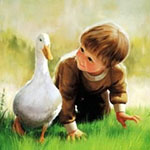

兴趣爱好
- 看书，阅读
上了大学泡图书馆已成为一种普遍现象，在一个安静的环境里不但能够静心，
而且在阅读中能够接受知识的熏陶。在图书馆里能够找到自己喜欢看和专业对准的图书，
从而达到高效阅读，获取知识的目的，而图书馆正是这样的场地。图书馆是搜集、整理、
收藏图书资料以供人阅览、参考的机构，早在公元前3000年就出现了图书馆，
图书馆有保存人类文化遗产、开发信息资源、参与社会教育等职能。
- 学习编程
通过学习大数据知识能够真正掌握社会的命脉，跟上世界的潮流响应国家的号召，
全球互联网都已意识到了大数据时代，大数据的重要意义。包括EMC、惠普(微博)
IBM、微软(微博)在内的全球IT巨头纷纷通过收购大数据相关厂商来实现技术重
整可见其对大数据的重视，大数据时代越来越需要投入更多的人才去共同建造。
- 
- 绘画
通过绘画训练发展想象力和创造力，同时培养思维能力，真正认识世界，
并且通过右脑绘画提高对学习的兴趣，培养做事的专注力，认真对待每一件事
及养成独立自主，独立动手，独立思考的学习生活习惯。
而现在的大数据时代正是需要这样的解决问题能力和思考能力。在书画的
世界里能够更加明了的干啥的色彩的力量和艺术的境界。

- 游泳
游泳能够起到健身的作用，
其中包括心血管、呼吸系统、
人体皮肤等。增强心肌功能、
增强抵抗力、加强肺部功能、改善肌肉系统的能力、改善体温调节的机制和
减肥健美形体，所以游泳是一项既可以起到健身又可以放松心情的极限运动。